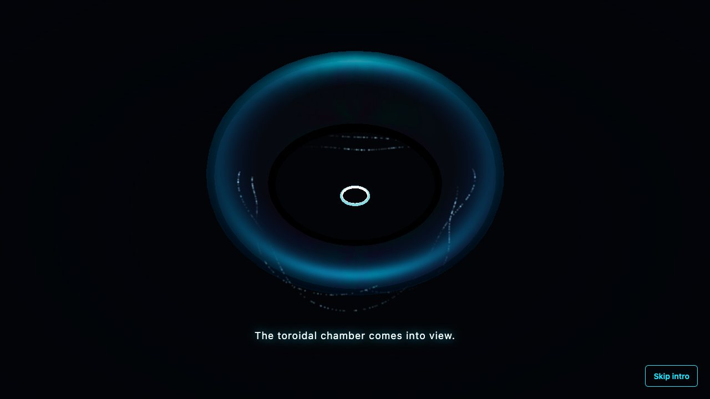
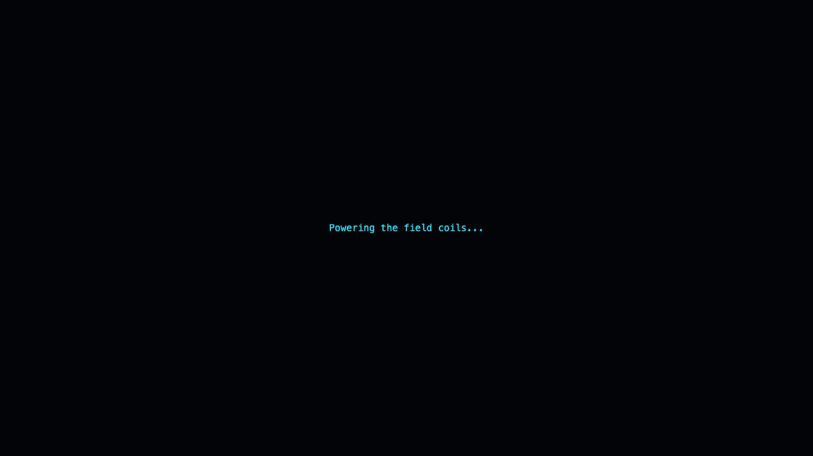
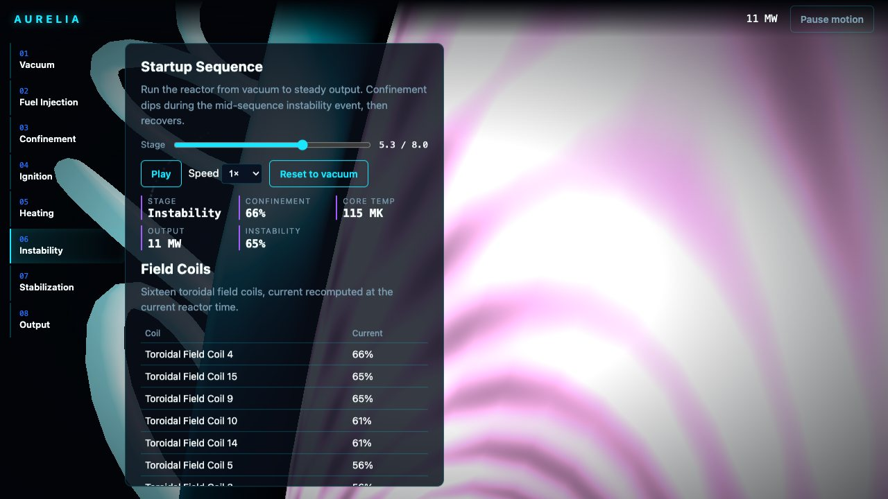

Blender · three.js · motion design · 2026-10
What Does It Look Like to Bring a Star Online?
An interactive fusion reactor operations and plasma education platform: a single continuous reactor-state value drives the HUD, the 16 instanced field coils and a GLSL plasma shader through eight stages from vacuum to steady output, with a mid-sequence instability event the reactor has to recover from.
Built from blueprint 02 of a written build book (Advanced Engineering Build Book, Volume VIII) as one vertical slice, using the five-tool-design-pipeline skill the same way as blueprint 01: an Awesome Design file for type/spacing scale only (palette from the blueprint), the Taste/Impeccable checklist applied by hand, Playwright for QA, Three.js as the product itself. Everything is synthetic: the 8-stage reactor curve, the 16 field coils and the operator log come from a deterministic function, not a real plasma physics model. Not built: WebGPU compute (WebGL2 ships instead, documented), a Python numerical service (the curve lives in a tested TypeScript package), auth, a physical-GPU measurement.
01 — The problem
The book's rule for this blueprint is that the scroll interaction has to make the user feel like they are bringing a star online, with sections as state transitions in one reactor rather than separate pages. That rules out a simple multi-page dashboard: the vacuum, ignition and output views have to be the same object changing, not different screens.
02 — What I built
One repository with the whole pipeline.
- A scripted asset:
model/build.pybuilds a toroidal field coil and a console prop, exports GLBs, renders a poster. - A domain model: one function,
metricsAt(t), defines confinement, core temperature, output and instability across all 8 stages with an intentional mid-sequence instability dip, consumed identically by the HUD and the plasma shader. - A browser runtime with a single shared navigation value (
state.t, 0 to 8): the stage rail jumps to integer boundaries, a continuous scrub moves freely, and the camera orbits the torus at an angle derived from the same number. - An intro that dives the camera into the torus and hands off through a light mask at the same screen point, no cut.
- Fallbacks: poster for no WebGL, static keyframes for reduced motion, full DOM tables for every canvas fact.
03 — How it was built
- 01
One number drives the whole product
state.tis the only navigation state. The rail, the continuous scrub, and the post-intro orbital camera angle (t/8 * 2pi) all read it, so there is no separate concept of 'which page am I on' versus 'what is the reactor doing'. - 02
An instability event, not just a ramp
The metrics curve is 8 hand-placed stage values with per-stage interpolation deltas, not a monotonic ramp: confinement and output both dip at the instability stage and recover during stabilization, so playing the sequence forward tells a real story instead of a straight line going up.
const confinement = [0,0.1,0.55,0.85,0.92,0.7,0.88,0.95][stage] + [0,0.45,0.3,0.07,0.02,-0.18,0.1,0.02][stage] * p; - 03
Sixteen coils, four draw calls
The field coils are one instanced mesh; current per coil comes from a phase-offset sine so the animation reads as a rotating field rather than all 16 pulsing in lockstep, at no extra draw-call cost. The full scene (chamber, plasma, coils, particles) renders in 4 draw calls.
- 04
A test-writing lesson
A Playwright test that sets a range input's
.valueand dispatches a syntheticinputevent changes the DOM but does not reach React's event system, so any assertion on derived state needs a real click/keyboard interaction instead. Documented indocs/qa-report.mdfor the next blueprint.
04 — Results
The toroidal chamber forming in the intro:

Heating and instability:


Checks. 14 unit and API tests, 18 Playwright tests (interaction, performance, 8-stage visual regression), clean typecheck.
Performance, SwiftShader (no GPU claim). 4 draw calls, 12,672 triangles; 566 KB gzipped JS; 31 KB and 4 KB of GLB. 3.9 s LCP, median 16.7 ms per frame (a 60 fps bound on a CPU rasteriser).
05 — What I'd do next
- Measure on a physical GPU and a mid-range phone.
- Replace the synthetic metrics curve with a real plasma-physics adapter (the book's WebGPU-compute stack).
- Build the console prop into the runtime as an operator-deck view instead of leaving it asset-only.